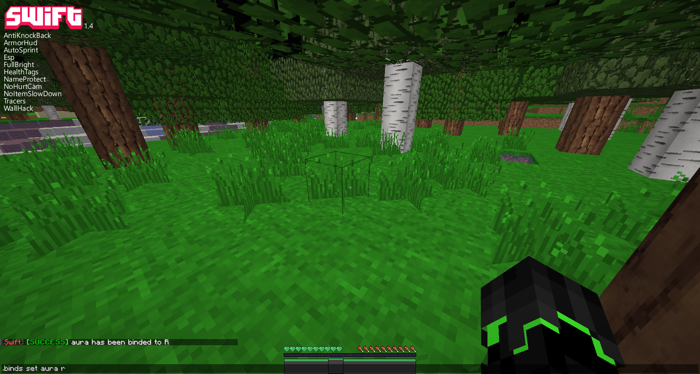
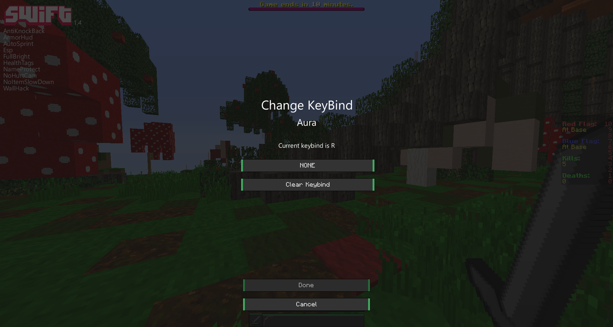

How do I set/delete key binds?
There are two possible ways to set/delete keybinds.

First Method - (Harder)
You can go into chat and type ".binds set [MOD] [KEY]" to set keybinds or type ".binds del [MOD]" to remove a keybind.
*Keep in mind that you spell all the mods names in lowercase with no spaces!
if you don't get it go into the chat and type ".help" to show you this command and lots more.

Second Method - (Easier)
Go to the gui and right click a mod and then click the button that says "NONE" and press a key, then click done.
*If you want to know want binds have been set you can type ".list" in chat or right click the mods you want to know the keybind for!